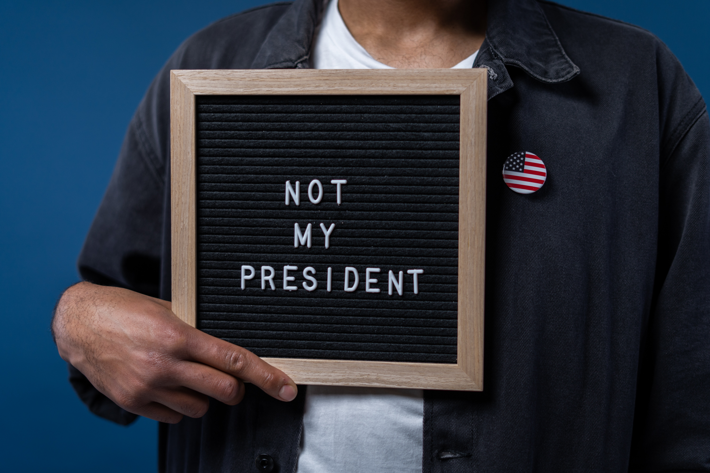

05/10/2021
Political polarization is increasing in societies such as the United Kingdom and the United States. Many people now not only despise the political party that they disagree with but also their voters. The media has exacerbated this polarization, with news broadcasting stations taking political stances and the echo chamber phenomenon created by social media applications. This has led to extreme views becoming more common on both sides of the political aisle, facilitating the rise of populism and identity politics. We must alter course to prevent further divisions and political extremism. Hating every single person who voted for the opposing party is no longer a tenable position to hold in the pursuit of creating a better society.
We hate them because they hate us
The increasing divisions between “the left” and “the right” has led to people holding extremely negative opinions of those on the other side. In the United States, for example, 61% of Democrats take the view that Republicans are either racist, sexist, or bigoted, whilst 54% of Republicans believe that Democrats are spiteful. These opinions have large social impacts, with 30% of Democrats and 23% of Republicans claiming that they would be unhappy a family member married a supporter of the opposing party. The rapprochement of both sides of the political aisle will continue to be unachievable if people hold such negative views of the other side.
A sign reads, "Not my president".
The unwillingness of voters to communicate with those on the other side has resulted in them becoming more rooted in their beliefs. The share of Americans, for example, who hold consistently conservative or consistently liberal views has doubled over the past 20 years from 10% to 21%. A large-scale study found that people’s core beliefs are now better predictors of their political views than income. Those who have the same opinions on gender roles and the virtue of capitalism tend to have the same views on a range of issues from immigration to trade. For example, 81% of Democrats stated that there is solid evidence for climate change to just 58% of Republicans. The fact that it is so easy to guess someone’s views on a range of topics just by knowing their political affiliation shows that people are not thinking for themselves. True independent thought would see people hold a range of opinions regardless of what party they vote for every four or five years.
Has media divided the nation?
News broadcasting networks in the US and UK are increasingly taking political sides. FOX News and GB News are seen to have right-of-centre bias compared to the left-of-centre bias attributed to CNN and the BBC. In their book Good Economics for Hard Times, Abhijit Banerjee and Esther Duflo state that FOX News has become more conservative to cater to their increasingly conservative audience. The same is true for the UK broadcasting network GB News. When it launched, it was ostensibly a down the middle network. In July 2021, it was reported they were not attracting any viewers during some of their slots. The arrival of Nigel Farage, a former politician with hard-line views, saw GB News attract more viewers than BBC and Sky during his time slot. This is not the fault of those news stations per se. We only want to hear viewpoints that we agree with and are therefore incentivising these news stations to take political stances.
A news broadcasting station.
Moreover, social media has contributed to the divisiveness within society. People operate within echo chambers where their views are amplified, rather than challenged. Both liberals and conservatives get over 90% of their social media feed from like-minded sources. This lack of exposure to other opinions has further consolidated their political views. Some people now hold opinions of the other side of the political aisle that are completely untenable in an effectively functioning society. One person, for example, tweeted after the last UK election, “I will not forgive any single person who voted Conservative in this election”. We cannot collectively build a better society if half of the population refuses to engage with the other half because of their political orientation.
Society is becoming increasingly divided along political lines. Though this has been exacerbated by media, we have allowed this to happen by not wanting our views to be challenged. Voters are now more rooted in their political beliefs than ever before. This has had negative implications such as the rise of populist leaders, something that would be near impossible in a politically moderate society. Given the damage this has caused, it is no longer reasonable to hate and insult people who voted for a political party that you dislike. We must do better. To build a better society, we need collectivism, compromise, and respect.